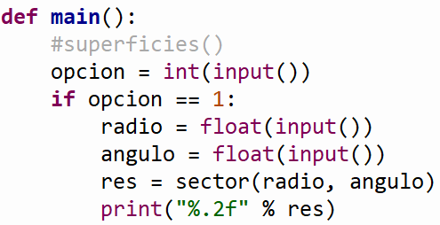

.
Objetivos:
- Aplicar los conocimientos
sobre funciones.
- Reconocer la importancia del
uso de funciones para el diseño de un programa.

Modalidad:

Instrucciones:
- Implementa las siguientes funciones, recuerda
que las funciones se definen antes de la función del main y del
script principal.
-
La función
main()
debe mandar llamar a la función que imprime el menú correspondiente
y de acuerdo a la opción seleccionada por el usuario le dé la
oportunidad de ejecutar cualquiera de las funciones que han sido
construidas. Utiliza el estatuto de control
if. Recuerda que la captura de datos debe ser
realizada en la sección del main. Valida opciones incorrectas.
En el
script principal manda
llamar a la función main.


Ejercicio
Construye las funciones para calcular la superficie de cada una de las
siguientes figuras:
-
La función
sector(radio, angulo)
que recibe el radio y el ángulo (reales
o con punto decimal).

Casos de prueba:
Input:
Número de opción (1. Sector)
Input:
Valor del radio (real)
Input:
Valor del angulo
(real)
Output: Superficie de la figura (real con dos decimales)
|
Input:
1
Input:
5.0
Input: 45.0
Output:
9.82
|
Input:
1
Input:
7.5
Input: 90.0
Output:
44.18
|
-
La función
eclipse(a, b)
que recibe los radios a y b (reales o con punto decimal).

Casos de prueba:
Input:
Número de opción (2. Eclipse)
Input:
Valor del radio a (real)
Input:
Valor del radio b
(real)
Output: Superficie de la figura (real con dos decimales)
|
Input:
2
Input:
5
Input:
2
Output:
31.42
|
Input:
2
Input:
8.5
Input: 3.1
Output:
82.78
|
-
La función
paralelogramo(a, h)
que recibe la longitud a y la altura h (reales o con punto decimal).

Casos de prueba:
Input:
Número de opción (3. Paralelogramo)
Input:
Valor del lado a (real)
Input:
Valor de la altura h
(real)
Output: Superficie de la figura (real con dos decimales)
|
Input:
3
Input:
7.2
Input: 4.6
Output:
33.12
|
Input:
3
Input:
5.3
Input:
2.5
Output:
13.25
|
- La
función superficies()
que despliegue el siguiente menú en pantalla:
1. Sector
2.
Eclipse
3. Paralelogramo
4. Salir
Casos de prueba:
Input:
Número de opción (4. Salir)
Output:
Mensaje "Adios"
Casos de prueba:
Input:
Número de opción (Opción inválida)
Output:
Mensaje "Opcion_invalida"
|
Input:
-3
Output:
Opcion_invalida
|
Input:
8
Output:
Opcion_invalida
|
-
La función
main()
que utilice la función superficies y de acuerdo a
la opción seleccionada por el usuario mande llamar a la función
correspondiente para calcular la superficie elegida. Utiliza el
estatuto de control
if. Recuerda que la captura de
datos debe ser realizada en la sección del main. Valida opciones
incorrectas.
-
En el
script principal
manda llamar a la función main.
-
Guarda tu archivo como:
O_matricula.py.

Recursos:
6. Funciones

Especificaciones
de entrega en Vocareum:
NOTAS IMPORTANTES:
-
Tu programa no debe incluir ningún mensaje
para pedir los datos y no debe incluir ningún mensaje diferente de
lo que se te pide como salida.
-
La función que imprime el menu de
superficies deben ponerla en comentarios #superficies(),
ya que en Vocareum no podemos desplegar este menu.

|